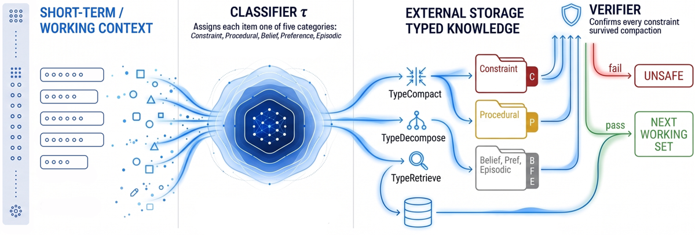
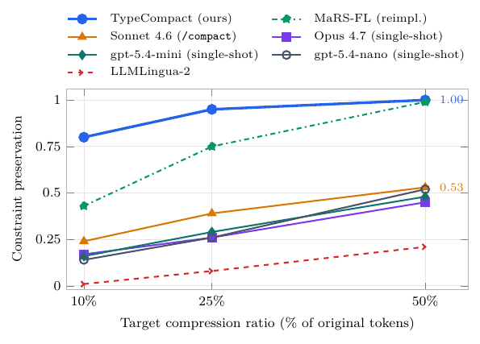
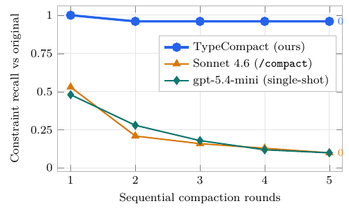
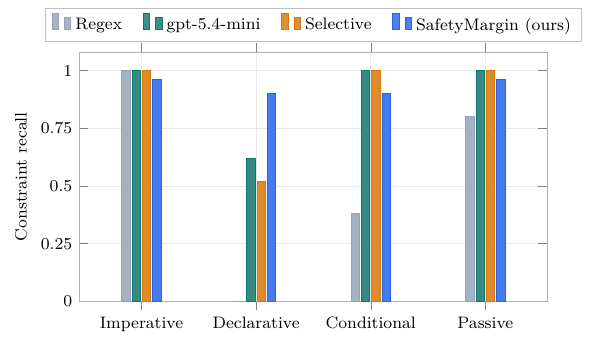

Sous le prompt de compaction de production (« compresse à N tokens, garde chaque règle de sécurité et chaque commande verbatim »), la fraction des règles de sécurité qui survivent tombe à 53 % après un tour et 10 % après cinq, pour toutes les familles de LLM testées et tous les baselines structurels — les auteurs appellent ça le Compaction Cliff — et la correction est de ne pas confier l'arbitrage au compacteur : un classifieur assigne un type à chaque item une fois, à l'indexation, et les items de type « contrainte » sont épinglés à fidélité exacte par trois opérateurs déterministes (compaction, décomposition, retrieval).
Claim principal, précisément : sous budget faisable, TypeCompact garantit par construction la
préservation à distorsion nulle de toute contrainte que le classifieur a étiquetée — 1,00 / 0,95 /
0,80 de constraint recall à 50 / 25 / 10 % de compression contre 0,53 / 0,39 / 0,24 pour le meilleur
compacteur LLM single-shot [§4.3, Tab. tab:curves], avec report mesuré sur le comportement
(τ-bench retail 37,7 % vs 29,2 % hierarchical, p = 0,005 [Tab. tab:behav]). La garantie est
explicitement bornée par le recall du classifieur : « Per-type retention preserves no more
constraints than the classifier detects » [§4.5].
⚠️ Cadrage, à poser d'emblée : ce papier n'est pas un papier RL. Aucun entraînement, aucune
politique, aucun ratio d'importance, aucune trajectoire de rollout compactée. L'objet compacté est
une base de connaissances statique (fichiers CLAUDE.md / AGENTS.md / system prompts,
documents de politique τ-bench, notices FDA), pas un historique de dialogue ni un épisode. Ce qu'il
apporte au problème « compaction dans un env RL », c'est la brique amont : le test de fidélité de
compaction et sa métrique. L'invalidation du ratio d'importance de PPO par une compaction en cours
d'épisode n'est ni mesurée ni mentionnée — c'est à nous de la faire.
Origine des tâches. Six corpus, trois rôles [§4.1, Tab. tab:corpora] :
| Corpus | Échelle | Origine | Rôle |
|---|---|---|---|
| AgentArtifactCorpus (AAC), le leur | 396 934 artefacts / 54 628 dépôts GitHub | minés (GitHub Code Search API) | typologie, compaction, scope |
| LongMemEval | 500 tours | public | validation croisée de la taxonomie |
| τ-bench retail | 115 tâches | public | rollouts comportementaux |
| τ-bench airline | 50 tâches | public | généralisation intra-domaine |
| BEIR scifact | 1 000 docs | public | distracteurs pour le retrieval |
| SafetyMed, le leur | 200 scénarios | généré : MedQA × openFDA | éval comportementale médicale |
Pipeline AAC [§4.1] : GitHub Code Search API avec partitionnement adaptatif par taille de fichier pour contourner la limite de 1 000 résultats de l'API → 8 plateformes (Claude, Cursor, Copilot, Windsurf, Continue, Aider, Codeium, Universal) → classification sur 4 dimensions (plateforme, fonction, authorship, spécificité) par regex uniquement, « with no LLM analysis to avoid downstream contamination ». Taille médiane d'artefact 1 201 octets ; langages TypeScript 31,5 %, Python 18,7 %, Go 18,2 %. Licences permissives.
Pipeline SafetyMed [§4.5] : chaque scénario MedQA apparié à son texte FDA BOXED WARNING +
CONTRAINDICATIONS via l'API openFDA ; chaque scénario porte une action gold REFUSE/PROCEED que
l'agent doit produire. Script de construction renvoyé à l'artefact publié (pas dans le papier).
Volume annoté. 2 000 items gold à partir de 200 dépôts AAC échantillonnés aléatoirement, stratifiés par étoiles et par langage ; deux annotateurs indépendants sur une rubrique publiée, seconde passe d'adjudication sur la même rubrique ; + 500 tours LongMemEval labellisés pour la validation cross-domaine [§4.2]. Second jeu : 200 items AAC pour l'ablation de classifieur, relabellisés par un annotateur indépendant [§4.4]. Troisième : 100 cellules de l'expérience de compaction, dont 80 double-labellisées, κ calculé avant toute réconciliation [§4.5]. Quatrième : 564 phrases openFDA (30 médicaments) + 36 clauses LegalBench, dont un sous-échantillon stratifié de 100 phrases re-labellisé par un second juge indépendant [§4.2].
Distribution de difficulté. Donnée sous forme de densité de types, et c'est le point utile :
Constraint 12,3 %, Procedural 28,7 %, Belief 31,4 %, Preference 14,2 %, Episodic 13,4 % [Tab.
tab:typoresults]. Sur 50 configurations de compaction : 622 contraintes, 2 257 procédures [§4.3].
La queue qui fait mal est petite et identifiée : 1,4 % des configurations ont une densité
contrainte+procédural > 40 %, et c'est là que B_min s'approche du budget [§4.3]. Côté scope : 74 %
des configurations n'ont aucune contrainte global-scope (médiane d'overhead de réplication 0 %,
p90 21 %, pire cas 219 %) [§4.3].
Filtrage. Pas de filtrage par pass@k (pas d'entraînement). Les seuils sont des seuils de
routage, pas de sélection de données : confiance encodeur < 0,55 → escalade LLM, < 0,40 → voie
dure par défaut (abstain-as-hard) ; θ_C sur p(τ(i)=C)·w_{a(i)} [§3.2, Alg. alg:typecompact].
Curriculum. Sans objet. La seule dimension ordonnée est le nombre de tours de compaction séquentiels (1 à 5, à 50 % par tour), qui joue le rôle de stress-test longue durée [§4.3].
Contamination. Traitée dans un seul sens : pas de label LLM dans la construction d'AAC pour éviter la contamination en aval [§4.1] ; le test de phrasing adverse n'utilise pas les labels gpt-5.4-mini puisque les items sont des réécritures de règles dont le label est connu d'avance [§4.4]. ⚠️ La contamination par pré-entraînement n'est jamais discutée : AAC est du GitHub public et τ-bench est un benchmark public et très utilisé — les modèles évalués (Sonnet 4.6, gpt-5.4, Qwen3) ont très plausiblement vu ces fichiers. Pour une mesure de préservation ça joue peu, pour les pass rates τ-bench ça joue. Séparation train/test : non applicable au cadre (rien n'est entraîné) sauf pour le classifieur NLP de §4.2, dont le protocole d'entraînement/évaluation (split, taille) est non précisé au-delà de « evaluated against the human labels ».
Données SFT/IFT avant RL. Sans objet.
Coût humain. Partiellement chiffré : 2 annotateurs sur 2 000 items (§4.2), 1 annotateur indépendant sur 200 items (§4.4), 2 annotateurs sur 100 cellules dont 80 doubles (§4.5), 1 second juge sur 100 phrases (§4.2). Heures, profil et rémunération des annotateurs : non précisé. Pas d'experts de domaine (ni médecin, ni juriste) dans la boucle d'annotation — ce qui est une limite pour SafetyMed et pour l'extrapolation juridique.
Deux niveaux distincts, à ne pas confondre.
Ce n'est pas un env RL. C'est une boucle de context management à trois opérateurs, déterministes,
sur une base typée K = (I, τ, T, π, σ) : items, assignation de type, arbre de topics, mapping
item→feuille, et fonction de scope σ: I_C → 2^leaves(T) qui liste les topics auxquels chaque
contrainte s'applique (global-scope ⇒ σ(c) = leaves(T)) [§3.1]. L'objet σ est le vrai apport de
modélisation : c'est lui qui permet la réplication en décomposition et le pinning en retrieval.
Observation / espace d'actions. Pas d'agent qui observe : les trois opérateurs sont des
fonctions. Leurs signatures, recopiées [§3.3] :
- TypeCompact(K, B, h, v, a, θ_C, θ_P) → K' avec |K'| ≤ B, ou UNSAFE. Complexité :
O(|K|) appels classifieur, O(|H| log|H|) allocation, O(|I_C|) vérification.
- TypeDecompose(K, B) → {K_1..K_m}, chaque K_i ≤ B. O(|K|) groupement, O(|I_C|·m) réplication.
- TypeRetrieve(K, q, k, r, inscope) → C_q ∪ topk(K∖C_q, k−|C_q|, by=r(q,·)). O(|I_C|) test
in-scope + le scorer ; « pinning adds no asymptotic overhead ».
Trois voies de fidélité (lanes), d'après Adaptive Focus Memory : contraintes et procédures en
FULL, beliefs et preferences en COMPRESSED, épisodique en PLACEHOLDER [§3.3]. Distorsion
par type [§3.1] : d_C = 0 si i' ⊨ i, ∞ sinon (binaire — intact ou perdu) ; réécritures
préservant l'exécution pour les procédures ; distance d'embedding 1 − cos(e(i), e(i')) pour
beliefs et preferences (plus stricte pour beliefs) ; distance de gist 1 − ROUGE-L pour
l'épisodique.
Budget minimum sûr, le seul vrai test a priori du papier :
B_min = Σ_{i : τ(i) ∈ {C,P}} |i|. En dessous, « the system must expand the budget, relax
safety, or fall through to decomposition » [§3.3]. Composition : compaction d'abord ; sous B_min,
bascule en décomposition, qui pousse une partie de la base en stockage externe que TypeRetrieve
rappelle à la demande [§3.3, Fig. fig:cycle].
Pondération d'autorité [§3.2] : a: I → {SYS, DEV, USER, TOOL, RET} avec
w_SYS = 1,5 · w_DEV = 1,25 · w_USER = 1,0 · w_TOOL = 0,75 · w_RET = 0,6, et
risk(i) = p(τ(i)=C) · w_{a(i)}. Utile côté juridique (voir §9) : c'est une hiérarchie de sources.
Gestion des erreurs et des sorties mal formées. Deux mécanismes explicites, et c'est le cœur de
l'intérêt du papier : (i) abstain-as-hard — un item sur lequel le classifieur s'abstient part en
voie dure, donc est traité comme une contrainte (abstain(p_i) dans la garde de l'Alg.
alg:typecompact) ; (ii) escalade UNSAFE quand ℓ(H) > B, c'est-à-dire quand les items
épinglés ne tiennent pas dans le budget — la sortie est refusée plutôt que tronquée silencieusement.
Un cas de malformation observé côté modèle : Opus 4.7 tombe à 0,73 de constraint recall « because
its reasoning trace overflows the single-word output format » [§4.4] — soit un échec de parsing
compté comme un échec de classification.
tab:behav].Exemple de trajectoire. Aucun n'est donné. Le papier fournit en revanche un exemple de dégradation recopiable, le seul « avant/après » du texte [§4.3, Discussion] : LLMLingua-2 pondère les tokens par entropie, donc « Patient is allergic to penicillin. Never prescribe… » compresse au taux 0,5 avec la négation supprimée. Et le scénario d'ouverture [§1] : la ligne d'allergie est paraphrasée ou supprimée à la compaction, et trois tours plus tard l'agent recommande de l'amoxicilline.
Pas de reward (rien n'est entraîné). Deux vérifieurs, à bien séparer : le vérifieur en ligne (composant de la méthode) et la métrique d'évaluation (juge de l'expérience). Le papier ne les distingue pas typographiquement, et ils partagent la même primitive — ce qui est la faiblesse méthodologique principale.
Type : déterministe, pas de LLM. Il « extrait une forme canonique (négation + syntagme
objet) de chaque contrainte de la voie dure, vérifie qu'elle apparaît dans la sortie, et restaure
l'original ou escalade en UNSAFE » [§3.3]. Granularité : binaire par contrainte, agrégation par
clause d'échec (une seule contrainte manquante ⇒ restauration, ou UNSAFE si le budget ne le
permet pas) — pas de somme pondérée, pas de crédit partiel. Coût : O(|I_C|), zéro token LLM.
Fiabilité mesurée : indirectement, par ses déclenchements — 27 événements de restauration sur
l'ensemble du run, moyenne 0,46 par appel, max 1, et jamais d'escalade UNSAFE à 50 % de
compression [§4.3, ablation (ii)]. Sur les 1,4 % de configurations à densité C+P > 40 % : escalade
UNSAFE sur 28 % d'entre elles, 1,00 de recall sur les 72 % restantes [§4.3, ablation (iii)].
Type : key-token test, automatique, non-LLM, même primitive que le vérifieur. Le constraint recall est « the fraction of a configuration's classifier-labeled constraints that survive, measured by the key-token test of §4.5 » [§4.3].
Référence : la base avant compaction, telle qu'étiquetée par τ. ⚠️ Il n'y a pas de jeu gold humain de contraintes sur le corpus de compaction : le dénominateur est produit par le même classifieur que celui qui décide de l'épinglage. TypeCompact épingle ce que τ étiquette, la métrique compte ce que τ a étiqueté : le 1,00 est vrai par construction, et les auteurs l'écrivent (« This holds by construction: it pins every classifier-labeled constraint and procedure unchanged ») [§4.3]. Ce qui est mesuré n'est donc pas « TypeCompact préserve les contraintes » mais « TypeCompact préserve ce que τ voit », et le recall de τ (0,87–0,93 selon la variante, 0,52–0,62 sur formulation déclarative) est le vrai plafond.
Accord juge ↔ humain (trois quantités, le papier en donne deux, proprement) [§4.5] :
- 2 annotateurs, rubrique 4 classes publiée, 100 cellules dont 80 doubles, κ calculé avant
réconciliation : κ = 0,77 sur 4 classes (85 % d'accord), κ = 0,92 sur la décision binaire
preserved/lost (96 %).
- Accord consensus humain ↔ décision automatique : 79 % des cellules. C'est le chiffre qui
compte, et il n'est pas présenté comme un plafond de bruit alors qu'il en est un.
- Les désaccords se concentrent sur la classe Weakened : 28 % des cellules automatiquement
« Preserved », surtout à 10 % de compression, « where key tokens survive but a qualifier is
dropped ».
- FP / FN séparés : non. Les 79 % sont donnés en bloc, sans ventilation faux-positifs /
faux-négatifs avec dénominateurs distincts. On sait seulement que l'erreur est orientée : les
humains sont plus stricts, donc le juge automatique sur-crédite.
- Le biais de strictness est ventilé par méthode, et c'est le résultat le plus honnête du papier :
sous jugement humain, la préservation de TypeCompact perd 5 points (91 % → 86 %), contre
15 pour temporal windowing (65 → 50), 23 pour hierarchical truncation (64 → 41), 30
pour aggressive pruning (71 → 41). L'écart s'élargit donc sous jugement humain [§4.5].
Juges LLM utilisés ailleurs : gpt-5.4-mini pour le scoring SafetyMargin (0–1, seuil 0,5), pour
la classification des 564+36 phrases en 4 formes grammaticales (κ = 0,88 quatre classes / 0,92
binaire déclaratif-vs-autre, 96 % d'accord observé sur 100 phrases re-labellisées), et comme
source des labels de référence de Tab. tab:classifier_ablation — les auteurs signalent
explicitement que les lignes construites sur gpt-5.4-mini y mesurent de l'auto-cohérence et sont des
bornes supérieures. Contre référence humaine, gpt-5.4-mini tombe à précision 0,77 / recall 0,88 /
F1 0,82 pour les contraintes, contre 0,84 de F1 contre ses propres labels [§4.4]. κ humain à 5
classes : 0,45 seulement (désaccords procédural-vs-belief sur les snippets de code), 0,79 sur la
décision binaire contrainte-vs-autre (95 % d'accord) — les auteurs soutiennent, à raison, que
seule la décision binaire porte les claims de sécurité.
⚠️ Prompts et rubriques : non recopiés. Le papier n'a aucune annexe (il s'arrête après la
conclusion). Le prompt SafetyMargin, la liste des patterns regex, les seuils de cascade, le prompt
/compact de Claude Code et la rubrique d'annotation sont tous renvoyés à l'artefact publié
[note de bas de page §3.2, §4.2]. Le seul prompt verbatim du papier est celui donné aux compacteurs
LLM : « compress to N tokens, keep every safety rule and procedural command verbatim » [§4.3].
La liste des familles de regex est en revanche décrite en clair [§3.2] : indicateurs de contrainte
(never, must not, marqueurs capitalisés type CRITICAL, always/ensure/require + modal),
indicateurs procéduraux (verbes run, blocs de code, invocations de gestionnaire de paquets),
marqueurs temporels épisodiques (yesterday, recently), indicateurs de préférence (prefer,
ideally), essayés dans un ordre de précédence fixe, contraintes d'abord.
Robustesse / attaque. Oui, un test d'attaque, limité mais bien conçu : l'adversarial phrasing
test — 50 règles de sécurité écrites par les auteurs, réécrites en 4 formes grammaticales
(impérative, déclarative, conditionnelle, passive) = 200 items dont le label est connu d'avance,
donc sans circularité [§4.4, Fig. fig:adv_form]. C'est une attaque sur le classifieur, pas sur le
vérifieur. Le vérifieur lui-même n'a jamais été attaqué : aucune politique n'apprend à
l'exploiter, et aucun test de contrainte formulée de façon à ne pas produire de forme canonique
« négation + objet » (une obligation positive sans négation, par exemple « cite the controlling
authority ») — alors que la primitive du vérifieur suppose une négation. ⚠️ C'est un angle mort
direct pour le juridique, où beaucoup d'obligations sont positives.
Sans objet : aucun entraînement. Pas d'algorithme de RL, pas de KL, pas de groupe, pas d'advantage, pas de clipping, pas de steps. Le seul composant appris est le classifieur τ, et il est soit un appel LLM one-shot, soit une cascade, soit un classifieur NLP à features structurelles (mood, modaux, présence de blocs de code, marqueurs temporels) + sémantiques (embeddings de phrases clusterisés par HDBSCAN) + mots-clés [§4.2] — dont les hyperparamètres d'entraînement sont non précisés.
Ce qui tient lieu d'hyperparamètres (utile si on réimplémente) : seuils θ_C, θ_P (valeurs
non précisées) ; seuil SafetyMargin 0,5 ; confiance encodeur 0,55 puis 0,40 (cascade) ; poids
d'autorité 1,5 / 1,25 / 1,0 / 0,75 / 0,6 ; seuil de split récursif T = 200 avec KMeans sur
embeddings pour le test de scaling de décomposition ; cibles de compression 50 / 25 / 10 % ; 5 tours
séquentiels à 50 % par tour ; budget par partition 25 % du total ; k ∈ {5, 10, 20, 50} en
retrieval.
Compute et latence (rapportés, et c'est l'argument de déploiement) [Tab. tab:curves,
tab:ret, tab:classifier_ablation] : TypeCompact 0,0 s et 0 token LLM par configuration au
moment de la compaction, contre 73,9 s / 48 K tokens pour Sonnet /compact à 50 %, 166,2 s à 25 %,
420,3 s à 10 %. TypeRetrieve 0 token/requête contre 5 776–6 741 pour les LLM single-shot.
Le coût est déplacé à l'indexation : un appel classifieur par item, payé une fois, « never
re-invoked by the operators », donc constant en nombre de tours de compaction, de partitions
écrites et de requêtes servies [§3.2]. Latences par appel : regex < 1 ms, MiniLM distillé ~5 ms,
encodeur 387 ms, gpt-5.4-nano 684 ms, gpt-5.4-mini 667 ms, cascade 1 096 ms, Sonnet 4.6 3 452 ms,
Opus 4.7 3 853 ms, SafetyMargin 880 ms. GPU/TPU-heures : non précisé (pas de training).
Dynamique. Une seule courbe temporelle, et c'est le cliff : le recall par tour de compaction
(Fig. multiturn_stability). TypeCompact plat à 1,00 → 0,96 dès le tour 2 ; Sonnet /compact
0,53 → 0,21 → 0,17 → 0,13 → 0,10 ; gpt-5.4-mini 0,48 → 0,28 → 0,18 → 0,13 → 0,10. Aucune barre
d'erreur, un run par configuration, température non précisée.
Pas de reward hacking au sens RL (rien n'optimise contre le vérifieur). Mais le papier documente quatre modes de panne, dont deux silencieux, et c'est sa vraie valeur pour nous.
(1) Le Compaction Cliff lui-même.
→ Comportement : un compacteur type-blind résume les règles de sécurité au même taux que le texte
environnant, parce qu'il « n'a aucun signal pour savoir quelles phrases sont des règles de
sécurité » [§4.3]. 0,53 au tour 1 → 0,10 au tour 5.
→ Détection : constraint recall par tour, key-token test (Fig. multiturn_stability).
→ Correction : typage à l'indexation + épinglage. Évaluée : oui, sur les trois opérateurs et
en aval sur trois benchmarks comportementaux.
→ Généralité : reproduit sur 4 familles de LLM et 3 baselines structurels en single-round ;
« single-round survival is a consistent 19–42 % at 50 % compression across all four » [§5]. Le
multi-tours n'a tourné que sur 2 des 4 familles [§5] — ce que la figure confirme.
(2) Panne silencieuse du vérifieur retiré — le cas qui compte pour nous.
→ Comportement : sans vérifieur post-compaction, sur les 1,4 % de configurations à forte densité
C+P, les runs rapportent un recall apparent de 1,00 tout en perdant en moyenne 57 % des
contraintes qui auraient dû être conservées [§4.3, ablation (iii)]. La troncature de la voie dure
ne lève aucune erreur : « without it the same runs would silently truncate the hard lane ».
→ Détection : uniquement par l'ablation. Rien dans le run ne la signale.
→ Correction : vérifieur déterministe + escalade UNSAFE (28 % des configurations concernées).
Évaluée : oui, c'est l'ablation elle-même.
→ ⚠️ C'est la démonstration la plus nette du corpus qu'une compaction peut échouer sans faire
échouer le run ni lever d'exception, et que le seul détecteur est un test de fidélité explicite.
(3) Le pass rate ne détecte pas la perte de fidélité. → Comportement : sur SafetyMed, hierarchical truncation atteint le meilleur pass rate des quatre conditions (98,0 %) avec seulement 93,5 % de préservation, et Sonnet 92,5 % de pass pour 81,0 % de préservation [§4.5]. Autrement dit, 19 points de contraintes perdues coûtent ~5 points de pass. Sur τ-bench airline, gpt-5.4-nano erreure sur 23 des 50 cellules full-policy sans que ça remette en cause le protocole. → Détection : seulement parce que les auteurs mesurent préservation et pass séparément. → Correction : aucune — c'est une propriété du régime, pas un bug. → ⚠️ Ce n'est pas présenté par les auteurs comme un failure mode. Je le compte comme tel : un reward d'outcome est un détecteur quasi aveugle de l'infidélité de compaction. Pour un env RL, ça veut dire que la métrique de fidélité doit être hors du reward, mesurée en parallèle.
(4) Effondrement du classifieur sur formulation déclarative.
→ Comportement : « the patient is allergic to penicillin » n'est reconnue comme contrainte que
62 % du temps par gpt-5.4-mini, 52 % par la cascade sélective, 0 % par regex — contre 1,00 sur
impératif, conditionnel et passif. Perte de 38 à 48 points absolus [§4.4, Fig. fig:adv_form].
Cause structurelle nommée : « declarative safety statements carry none of these indicators »
[§3.2].
→ Détection : le test de phrasing adverse (labels connus d'avance).
→ Correction : SafetyMargin, classification contrefactuelle — margin(i) = max_a [P(unsafe |
a, K∖{i}) − P(unsafe | a, K)], seuil 0,5 — qui porte le recall déclaratif de 0,62 à 0,90
(+28 pts), au prix de 4 à 10 points sur les formes faciles (0,96 / 0,90 / 0,96) ; moyenne sur les
4 formes 0,91 → 0,93, latence 880 ms vs 667 ms [§4.4].
→ Évaluée : oui, et en aval : sur SafetyMed, la chute de Sonnet « concentrates on declaratively-
written boxed-warning sentences » [§4.5]. Reste 9 items manqués sur 200 (4,5 points sous le
plafond full-policy, p = 0,0039), attribués au recall 0,93 de SafetyMargin.
(5) Overhead de réplication à queue lourde. TypeDecompose : médiane 0 %, moyenne 14,5 %, p90 21 %, pire cas 219 % ; « the shape persists across classifier variants with only the mean shifting with the flag rate, so the extremes come from the input distribution » [§4.3]. Correction : aucune proposée ; c'est assumé comme le coût du mécanisme.
Comportement émergent inattendu (positif) : sur τ-bench retail, TypeCompact bat la politique complète (37,7 % vs 28,6 %), le gain se concentrant sur le plus petit modèle (gpt-5.4-nano : 36,0 % vs 22,5 %, p = 0,011) — « the agent benefits most from pinning the relevant rules rather than relying on the model to locate them inside the full policy » [§4.5]. Moins de contexte, meilleur résultat. ⚠️ Mais la comparaison n'est pas appariée en tokens (1 136 vs 669 pour hierarchical), les auteurs le disent, et l'effet s'inverse sur airline (TypeCompact 26,5 % < full 34,2 %).
Pas d'infra de rollout RL. Ce qui est rapporté :
- Débit / latence par configuration et par requête : voir §4 ci-dessus (0,0 s pour TypeCompact
contre 73,9–420,3 s pour Sonnet /compact selon le ratio).
- Coût par item : un appel classifieur à l'indexation, amorti sur tous les tours, toutes les
partitions et toutes les requêtes [§3.2]. C'est l'argument central de déployabilité : le coût ne
croît pas avec la durée du run.
- Goulot identifié : le classifieur τ, en recall comme en coût. Tout le reste est déterministe
et O(|K|) ou mieux.
- Scaling de la décomposition : sur un topic de 3 000 items, TypeDecompose récursif (T = 200,
KMeans sur embeddings) produit 29 feuilles de taille moyenne 103 ; retrieval held-out à k = 5
atteint 94 % de recall contre une borne flat-scan de 98 %, en examinant 92 items sur 3 000 par
requête — réduction 33× [§4.3].
- Coût en dollars, parallélisme, sync/async, nombre de workers : non précisé.
| Chiffre annoncé | Où il est annoncé | Source dans le papier | Verdict |
|---|---|---|---|
| « 53 % des règles après un tour, 10 % après cinq, sur 20 configurations de production » | abstract | Tab. tab:curves : Sonnet 4.6 C = 0,53 à 50 % ; Fig. multiturn_stability : 0,53 → 0,10 sur 20 configs |
confirmé, avec deux réserves : « production agent configurations » = dépôts GitHub publics, et le multi-tours n'a tourné que sur 2 des 4 familles LLM [§5] |
| « TypeCompact préserve 2–4× plus de règles que le meilleur compacteur LLM single-shot, à chaque ratio » | abstract + conclusion | Tab. tab:curves : 1,00/0,53 = 1,9× à 50 % ; 0,95/0,39 = 2,4× à 25 % ; 0,80/0,24 = 3,3× à 10 % |
contredit à 50 % (1,9×, pas 2×) → la borne basse de l'intervalle est fausse au ratio le plus pertinent en déploiement |
| (même claim, contre le meilleur baseline tous types confondus) | — | Tab. tab:curves + Fig. results_summary_cr : MaRS-FL (leur réimplémentation typée) atteint 0,99 à 50 %, 0,75 à 25 %, 0,43 à 10 % → ratios 1,01× / 1,27× / 1,86× |
sur-généralisé : le multiplicateur annoncé tient uniquement parce que le comparateur est restreint aux compacteurs LLM single-shot. Contre un baseline typé à utilité unique, TypeCompact est à parité à 50 % et ne se détache qu'aux ratios serrés |
| « 96 % de recall sur cinq tours » | abstract | §4.3 : « stabilizing at 0.96 from the second round onward » + Fig. multiturn_stability |
confirmé |
| « TypeDecompose : 0 % de violations de localité contre 93 % en partitionnement uniforme » | abstract + conclusion | Tab. tab:dec : 93 % = fraction de configurations avec ≥ 1 violation pour chunk_by_tokens et chunk_by_paragraph (les deux baselines les plus faibles) ; le meilleur baseline, chunk_by_topic, est à 13 % de violation moyenne / 40 % de configurations |
sur-généralisé : comparaison au baseline le plus faible, et deux métriques différentes juxtaposées. L'overhead de +14,5 % est omis de l'abstract |
| « TypeRetrieve : 100 % recall@50 contre 73 % pour le meilleur retriever LLM single-shot » | abstract + conclusion | Tab. tab:ret : TypeRetrieve 100 %, Sonnet 73 % — mais dense seul atteint 91 %@50 |
confirmé au pied de la lettre, sur-généralisé dans l'esprit : contre le meilleur baseline non-LLM l'écart est de 9 points, pas 27 |
| « medical compliance, McNemar apparié p < 10⁻⁸ sur la préservation, N = 200 » | abstract | §4.5 : p = 3,7 × 10⁻⁹ vs Sonnet, 95,5 % vs 81,0 % (écart 14,5 pts) | confirmé — mais l'abstract omet que hierarchical atteint le meilleur pass rate des quatre conditions (98,0 % vs 97,0 %) et 93,5 % de préservation, et que TypeCompact est 4,5 pts sous le plafond full-policy (p = 0,0039) |
| « bat les baselines full-policy et hierarchical sur le pass rate retail (p < 0,01, N = 115) » | abstract | Tab. tab:behav : 37,7 % vs 28,6 % (p = 0,003) et 29,2 % (p = 0,005) |
confirmé au niveau agrégé, sur-généralisé au niveau modèle : significatif pour un seul des trois modèles (gpt-5.4-nano) ; « N = 115 » est le nombre de tâches alors que le test porte sur 329 paires (modèle, tâche) ; et la comparaison n'est pas appariée en tokens (1 136 vs 669) — admis par les auteurs [§4.5] |
| « bat la compaction hiérarchique sur le domaine airline (p = 0,024) » | abstract | §4.5 : 26,5 % vs 15,4 %, écart 11,1 pts, 117 paires | confirmé — mais TypeCompact (26,5 %) reste sous full-policy (34,2 %), et le « statistically ties the full-policy ceiling » de la conclusion repose sur p = 0,14 sur 117 paires, soit une absence de preuve, pas une preuve d'absence |
| « five public corpora » | abstract (×2) + conclusion | Tab. tab:corpora : six corpus, dont deux construits par les auteurs (AAC, SafetyMed) → 4 publics |
contredit |
| « 396 934 agent configurations from 54 628 repositories » | abstract | §4.1 et Tab. tab:corpora : 396 934 artefacts / items ; l'unité « configuration » désigne ailleurs un objet bien plus gros (20, 50, 200 configurations) |
contredit sur l'unité — facteur d'exagération non quantifiable depuis le papier |
| « 1 035 rollouts appariés » / « 1 019 rollouts appariés » | Tab. tab:behav / conclusion |
1 035 lancés, 1 019 complétés sans erreur | incohérence mineure de libellé |
| « hierarchical truncation ne préserve que 50 % des contraintes sur 50 configurations réelles » | §1 | Tab. tab:comp : hierarchical truncation C = 0,50 |
confirmé |
| « typologie couvrant 97 % du contenu réel » | §1 + abstract implicite | §4.2, sur 2 000 annotations ; les 3 % restants sont des méta-instructions sans force de sécurité | confirmé (déclaratif, dépend de la rubrique des auteurs) |
| « SafetyMargin porte le recall déclaratif de 0,62 à 0,90 (+28 pts) » | §4.4 | Fig. fig:adv_form |
confirmé — avec le coût omis dans les résumés : −4 à −10 pts sur les autres formes, moyenne 0,91 → 0,93 seulement |
Verdict 7.0 : le chiffre de tête (le cliff) tient. Les trois multiplicateurs d'abstract tiennent
tous par choix du comparateur : contre les compacteurs LLM, pas contre le meilleur baseline
disponible — et dans un cas (MaRS-FL à 50 %) le meilleur baseline est à parité. Deux chiffres sont
factuellement faux (« five public corpora », « configurations » pour « artefacts »). Case
coherence = fausse.
| Expérience | Métrique | Meilleur baseline | TypeX | Écart absolu |
|---|---|---|---|---|
| Compaction 50 % (20 configs) | constraint recall | 0,99 (MaRS-FL) / 0,53 (Sonnet /compact) |
1,00 | +0,01 / +0,47 |
| Compaction 25 % | constraint recall | 0,75 (MaRS-FL) / 0,39 (Sonnet) | 0,95 | +0,20 / +0,56 |
| Compaction 10 % | constraint recall | 0,43 (MaRS-FL) / 0,24 (Sonnet) | 0,80 | +0,37 / +0,56 |
| Compaction, 5 tours | constraint recall | 0,10 (Sonnet, gpt-5.4-mini) | 0,96 | +0,86 |
| Décomposition (200 configs) | violation moyenne / configs touchées | 13 % / 40 % (chunk_by_topic) | 0 % / 0 % | −13 pts, à +14,5 % d'overhead |
| Retrieval (1 033 items, 50 req.) | in-scope recall@50 | 91 % (dense) / 73 % (Sonnet) | 100 % | +9 / +27 pts |
| SafetyMed (N = 200) | pass / préservation | 98,0 % / 93,5 % (hier.) ; 92,5 % / 81,0 % (Sonnet) ; 96,5 % / 100 % (full) | 97,0 % / 95,5 % | pass −1,0 vs hier. ; préservation +14,5 vs Sonnet |
| τ-bench retail (329 paires) | pass | 29,2 % (hier.) / 28,6 % (full) | 37,7 % | +8,5 / +9,1 pts |
| τ-bench airline (117 paires) | pass | 34,2 % (full) / 15,4 % (hier.) | 26,5 % | −7,7 / +11,1 pts |
| Classifieur, formulation déclarative | constraint recall | 0,62 (gpt-5.4-mini) / 0,52 (cascade) / 0,00 (regex) | 0,90 (SafetyMargin) | +28 pts |
Préservation par type à 50 % [Tab. tab:comp] — le trade-off assumé : TypeCompact
C 1,00 · P 1,00 · B 0,50 · F 0,51 · E 0,84 · moyenne 0,77, contre hierarchical truncation
C 0,50 · P 0,82 · B 0,75 · F 0,63 · E 0,77 · moyenne 0,69. On achète les contraintes avec les
beliefs. ⚠️ Dans un dossier juridique, une part des beliefs (« le contrat est régi par le droit de
New York ») est fonctionnellement une contrainte — voir §9.
Quatre ablations de retrait de composant [§4.3] :
1. Labels à l'indexation : LLMLingua-2 seul 0,55 / 0,18 / 0,02 ; + réinsertion regex
post-compression → 0,83 / 0,65 / 0,60. Ça ferme environ la moitié de l'écart ; l'autre moitié
ne se ferme que si le label est assigné avant la compression, « because declarative-form rules
carry no imperative marker for a regex to match ». → l'ingrédient qui compte n'est pas le typage,
c'est le typage non grammatical, en amont.
2. Vérifieur : 27 restaurations, jamais d'UNSAFE à 50 % ; sans lui, troncature silencieuse.
3. Comportement à la frontière de budget : sans vérifieur, 57 % de contraintes perdues sous un
recall rapporté de 1,00. « Removing any single component puts a deployed agent below the 0.50
mark on this sample, so the result depends on all three together. »
4. Variantes de classifieur (10) : voir Tab. tab:classifier_ablation. Non monotone en taille de
modèle — gpt-5.4-nano (0,93) égale la cascade sélective et bat Opus 4.7 (0,73).
Ablation manquante, nommée par les auteurs eux-mêmes : contrôle apparié en tokens sur les benchmarks comportementaux. « A token-matched behavioral control is an open direction » [§4.5]. Deux garde-fous partiels sont fournis (les expériences §4.3 sont budget-matched ; sur airline le footprint s'inverse, 647 vs 718 tokens, et TypeCompact mène quand même de 11,1 pts).
/compact réel, MaRS-FL), 6 retrievers,
10 variantes de classifieur, budget partagé et items épinglés comptés dans le budget [§4.3].tab:comp, tab:curves, tab:dec, tab:ret), un run par configuration, température non
précisée. Erreur standard donnée uniquement pour le tableau de classifieurs (3 à 5 points à
n = 200, avec la bonne conclusion : « only large differences are reliable »). Les p-values de
McNemar couvrent les résultats comportementaux. Le chiffre de tête (53 % → 10 %) n'a aucune
estimation de variance.knowledge_triage/, experiments/, data/, results/ ; dataset CC-BY-4.0 en
parquet). ⚠️ Mais le papier n'a aucune annexe et renvoie à l'artefact pour tous les prompts,
regex, seuils et rubriques : il n'est pas auto-suffisant.Evidence = 4/6 — baselines ✓ · ablation ✓ · variance ✗ · coherence ✗ · eval ✓ ·
repro ✓.
Verdict : solide sur le phénomène, fragile sur la supériorité annoncée de la méthode. Le Compaction Cliff est le résultat à retenir et il est robuste : quatre familles de LLM, trois baselines structurels, deux domaines de phrasing indépendants, une métrique validée contre des humains dont le biais va contre les auteurs (les humains sont plus stricts, ce qui pénalise davantage les baselines). La supériorité de TypeCompact est, elle, en partie définitionnelle (la vérité terrain est produite par le classifieur qui décide de l'épinglage) et en partie dépendante du comparateur choisi (MaRS-FL à parité à 50 %, dense à 91 % en retrieval). À répliquer sur le point précis qui nous intéresse : la panne silencieuse à 57 %, sur une vraie trajectoire d'agent et non sur un fichier de configuration.

Ce qu'il faut voir : l'architecture entière tient en une boucle — τ étiquette chaque item du working set en 5 types, les trois opérateurs appliquent une politique de rétention par type, et un vérifieur en sortie contrôle que chaque contrainte a survécu ; s'il en manque une, la sortie est marquéeUNSAFE, sinon elle devient le working set suivant. C'est exactement la forme d'un test de
fidélité de compaction : un contrôle déterministe entre deux états de contexte, avec une sortie
refusable. Noter que la boucle n'a pas de point d'entrée « trajectoire » : l'objet circulant est une
base de connaissances, pas un épisode.

Ce qu'il faut voir : deux choses que l'abstract ne dit pas. (1) Les quatre compacteurs LLM et LLMLingua-2 forment un faisceau serré bas (0,45–0,53 à 50 %, 0,14–0,24 à 10 %) : ni la taille du modèle ni la famille ne change quoi que ce soit — c'est le prompt type-blind qui échoue, pas le modèle. (2) La courbe pointillée verte, MaRS-FL, rejoint TypeCompact à 0,99 à 50 % : le baseline typé-mais-à-utilité-unique est à parité au ratio le plus courant, et ne décroche qu'à 25 % (0,75) et 10 % (0,43). Le « 2–4× » de l'abstract vit entièrement dans l'écart au faisceau LLM.
Ce qu'il faut voir : le cliff. Sonnet/compact 0,53 → 0,21 → 0,17 → 0,13 → 0,10 et gpt-5.4-mini
0,48 → 0,28 → 0,18 → 0,13 → 0,10 : les deux courbes se superposent, la perte est multiplicative
et indépendante du modèle, et l'essentiel du dommage est fait au tour 2 (−32 pts), pas au tour 5.
TypeCompact est plat à 0,96. Deux absences à voir aussi : aucune barre d'erreur, et seulement
deux familles de LLM sur les quatre testées en single-round (les auteurs le reconnaissent [§5]).

Ce qu'il faut voir : le failure mode exploitable. Sur impératif, conditionnel et passif, les classifieurs LLM sont à 1,00 ; sur déclaratif, gpt-5.4-mini tombe à 0,62, la cascade sélective à 0,52 et le regex à zéro (barre absente). SafetyMargin, qui ne classe pas la forme mais le contrefactuel de sécurité, tient à 0,90 sur déclaratif en ne payant que 4 points sur impératif. Pourquoi ça compte pour nous : la barre « déclaratif » est le régime juridique — 61,1 % des clauses de sécurité LegalBench sont déclaratives [§4.2]. Un filtre par mots-clés sur un dossier juridique rate donc la majorité des obligations.| Ingrédient | Choix du papier | Équivalent juridique | Transfert | Ce qui manque |
|---|---|---|---|---|
| Source des tâches | 396 934 artefacts minés sur GitHub, regex-only pour éviter la contamination de labels [§4.1] | mémos, jeux de pièces, politiques internes, codes et règlements : les sources existent mais ne sont pas publiques ni sous licence permissive | adaptable | un corpus juridique équivalent est à construire ; la stratification « étoiles × langage » n'a pas d'analogue — à remplacer par juridiction × matière × date |
| Vérifieur | key-token test déterministe, forme canonique = négation + syntagme objet, validé κ = 0,92 binaire vs 2 annotateurs [§3.3, §4.5] | test de fidélité sur un dossier compacté : la clause, la date d'effet, le montant, la citation sont-ils encore là au mot ? | direct pour les obligations négatives et les chaînes exactes (citations, dates, montants, numéros d'articles), non pour les obligations positives | la primitive suppose une négation. Une obligation positive (« cite the controlling authority ») ne produit pas de forme canonique. Et rien ne couvre l'omission d'une pièce entière |
| Classifieur de criticité | SafetyMargin contrefactuel : max_a [P(unsafe \| a, K∖{i}) − P(unsafe \| a, K)], 1 appel gpt-5.4-mini, seuil 0,5, 880 ms/item, payé une fois à l'indexation [§3.2] |
« si je retire ce paragraphe du dossier, est-ce qu'une conclusion devient fausse ou une obligation disparaît ? » — définition opérationnelle de la pièce décisive | direct, c'est l'ingrédient le plus réutilisable du papier | recall 0,90–0,93 seulement ; aucune validation par un juriste ; P(unsafe) n'a pas d'analogue net en droit — il faudrait le remplacer par « change le dispositif / l'issue » |
| Harness / outils | τ-bench retail et airline, politique compactée avant le rollout, 1 035 rollouts appariés [§4.5] | agent de recherche juridique multi-tours avec recherche, citation, rédaction | adaptable : le protocole apparié (full / type-blind / typé) est directement copiable | aucune compaction en cours d'épisode, horizon et timeouts non précisés, pas de tâche juridique évaluée |
| Algo | aucun (opérateurs déterministes) | — | non | tout le volet RL est à faire : rien sur le ratio d'importance, l'arbre de trajectoire, le crédit par tour |
| Curriculum | aucun ; seule dimension ordonnée = 1 à 5 tours de compaction | stress-test « dossier long » : N compactions successives sur un même dossier | direct comme protocole d'éval, pas comme curriculum d'entraînement | aucun |
| Anti-hacking | test de phrasing adverse (50 règles × 4 formes, labels connus d'avance) [§4.4] | même test sur des clauses : impératif / déclaratif / conditionnel / passif, plus les formes propres au droit (définitions, renvois, exceptions) | adaptable, et à élargir | le vérifieur n'a jamais été attaqué ; aucune politique n'apprend à l'exploiter |
| Hiérarchie de sources | poids d'autorité SYS 1,5 / DEV 1,25 / USER 1,0 / TOOL 0,75 / RET 0,6, risk(i) = p(τ(i)=C)·w_{a(i)} [§3.2] |
hiérarchie des normes : constitution > loi > règlement > jurisprudence d'appel > première instance > doctrine ; et dans un dossier : pièce signée > note interne > résumé d'un tiers | direct dans la forme, à recalibrer entièrement dans les valeurs | les poids sont posés sans justification empirique ; en droit la hiérarchie dépend de la juridiction et de la date |
Scope σ |
σ: I_C → 2^leaves(T), réplication de chaque contrainte dans chaque partition que son scope intersecte, overhead +14,5 % moyen / 219 % pire cas [§3.1, §4.3] |
portée d'une norme : matière, juridiction, période de validité | adaptable — c'est le mécanisme le plus proche du besoin juridique | σ est statique et spatial. Il n'a aucune dimension temporelle : rien pour « cette clause s'applique aux faits postérieurs au 1er janvier 2023 » |
Trois régressions prévisibles, et c'est le point à retenir pour Gemini Law.
1. Les pièces. Le mécanisme transfère presque tel quel. Un jeu de pièces est exactement une base
typée : les stipulations contractuelles et les obligations légales sont des C, les procédures de
notification des P, les faits allégués des B, les notes de stratégie des F, l'historique
procédural des E. Le B_min = Σ|i| sur C ∪ P se calcule sur le dossier avant tout run et répond à
la seule question qui compte en amont : ce dossier est-il compactable sans perte de normes à ce
budget ? ⚠️ Mais le trade-off par type du papier (B et F sacrifiés à 0,50 / 0,51 [Tab. tab:comp])
est faux en droit : un belief comme « le contrat est régi par le droit de New York » ou « la mise
en demeure a été reçue le 12 mars » détermine le dispositif. La partition à cinq types est trop
grossière — il faut au minimum scinder B en faits juridiquement opérants et contexte.
2. Les citations en cascade. C'est là que le papier ne transfère pas, et il faut le dire
franchement. Le modèle K = (I, τ, T, π, σ) est plat plus un arbre de topics : aucune relation
entre items. Or une citation juridique est un graphe orienté — A cite B qui distingue C qui est
infirmé par D — et la fidélité d'une compaction s'y mesure sur la préservation de la chaîne, pas
sur la survie de chaque maillon pris isolément. Le key-token test déclarerait « preserved » un
dossier compacté où chaque citation subsiste mais où le lien « infirmé par » a disparu. Le papier
donne pourtant l'amorce de la bonne réponse : les auteurs notent eux-mêmes que la mémoire en graphe
de connaissances est complémentaire et qu'un graphe peut héberger les items comme nœuds étiquetés
par leur classifieur, « with no extraction step because rules already live as natural-language
strings » [§2]. Ce qui manque est un d_C défini sur les arêtes.
3. Les dates d'effet. Angle mort complet. σ est une fonction vers des feuilles de topic ; rien
dans le formalisme ne porte le temps. Deux conséquences concrètes : (i) TypeDecompose répliquerait
une clause abrogée dans toutes les partitions de son scope avec le même zèle qu'une clause en
vigueur ; (ii) TypeRetrieve épinglerait les deux versions d'un article modifié en tête de résultats,
avant toute pertinence, sans arbitrer. Le papier cite une brique voisine de son propre groupe
(NuggetIndex, « governed retrieval ... filters records by validity before ranking » [§2]) mais ne
l'intègre pas. À faire : étendre σ(c) à topics × [date_début, date_fin] et ajouter un
inscope(q, c) qui teste l'intersection temporelle avec la date des faits. C'est une extension
mécanique de l'Alg. alg:typeretrieve, pas une recherche.
La paire { B_min calculé avant le run, vérifieur déterministe en sortie avec escalade UNSAFE }.
Pas le typage en lui-même : l'ablation (iii) montre que le typage sans vérifieur produit un
recall rapporté de 1,00 avec 57 % des contraintes perdues [§4.3]. Ce qui nous manque dans le corpus,
ce n'est pas une meilleure politique de rétention, c'est un détecteur, et le papier en livre un
qui coûte O(|I_C|) et zéro token LLM. Son autre mérite est d'être refusable : il produit un
statut UNSAFE plutôt qu'une sortie dégradée — en RL, c'est la différence entre un épisode qu'on
retire du groupe et un épisode qu'on score sans savoir qu'il est corrompu.
Second ingrédient, pour le classifieur : SafetyMargin plutôt qu'un filtre de forme. +28 points de recall sur formulation déclarative, et 61,1 % des clauses de sécurité LegalBench sont déclaratives [§4.2, §4.4]. Un filtre par mots-clés (never, must not) sur un dossier juridique rate la majorité des obligations — mesuré, pas supposé.
Dispositif. Prendre un env de recherche juridique multi-tours existant, à horizon long et
compaction active. Instrumenter la compaction avec un test de fidélité à trois niveaux, calculé
hors du reward et loggé à chaque événement de compaction : (a) exact-string sur les entités
non paraphrasables — citations, dates d'effet, montants, numéros d'article, noms de parties ;
(b) key-token sur les obligations, forme canonique étendue aux obligations positives ;
(c) chaîne — la relation entre deux citations liées (cite / distingue / infirme) survit-elle ?
Trois conditions appariées sur les mêmes tâches et le même budget de tokens : full-context (plafond),
compaction LLM type-blind (le régime de production), compaction typée avec épinglage + vérifieur.
Pré-calculer B_min sur chaque dossier et stratifier les tâches par B_min / budget.
Résultat attendu (si le papier transfère) : la fidélité (a) et (b) s'effondre sur la condition
type-blind, et surtout le pass rate de la tâche ne bouge presque pas — c'est le résultat SafetyMed
reproduit (hierarchical : 98,0 % de pass pour 93,5 % de préservation ; Sonnet : 92,5 % pour 81,0 %).
Sur la strate B_min / budget > 1, on devrait voir des compactions qui perdent la majorité des
normes sans qu'aucune exception ne soit levée — l'équivalent des 57 % silencieux de l'ablation (iii).
Corollaire opérationnel : B_min / budget est un test de dépistage avant run, au coût d'un
appel classifieur par pièce, payé une fois.
Résultat qui falsifierait : si le pass rate chute proportionnellement à la fidélité sur les trois conditions, alors le reward d'outcome détecte déjà l'infidélité de compaction et un test dédié est redondant — il n'y a pas de panne silencieuse dans notre régime, et ce papier ne nous concerne pas. Falsifierait aussi, plus subtilement : si la fidélité (a) et (b) se dégrade mais que (c) tient, alors la perte porte sur des maillons isolés et pas sur le raisonnement, et la bonne intervention est ailleurs.
Garde-fou à prévoir : apparier les tokens. Le papier s'est fait prendre exactement là (retail, 1 136 vs 669 tokens) et l'admet [§4.5]. Et poser un plafond de bruit : une condition « compaction identité » (ratio 100 %) pour mesurer ce que le test de fidélité perd tout seul — contrôle que ce papier n'a pas et dont l'absence rend les 79 % d'accord juge↔humain difficiles à interpréter.
Deux, liées :
1. Est-ce que la compaction de contexte est active dans les rollouts d'entraînement, et si oui, les
tokens sur lesquels on calcule le ratio d'importance sont-ils ceux qui étaient effectivement dans
le contexte au moment de l'émission ? Le papier établit qu'une compaction peut détruire 90 % des
contraintes en cinq tours sans lever d'erreur ; si cette compaction tombe au milieu d'un épisode
d'entraînement, le problème n'est plus seulement la fidélité du contexte mais le fait que la
trajectoire n'est plus une séquence. Ce papier ne traite que le premier volet.
2. A-t-on un log par événement de compaction (combien d'items pinnés, B_min, combien de
restaurations, combien d'escalades) ? Sans ce log, l'ablation (iii) dit qu'on ne peut pas
distinguer un run sain d'un run qui a perdu 57 % de ses normes : les deux rapportent la même
chose.